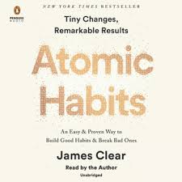
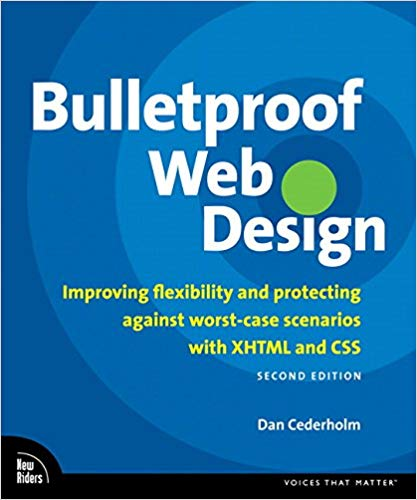
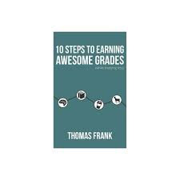

What Books Am I Reading?
Atomic Habits is a book by James Clear on how to make extremely small, minimal changes that set you effortlessly on the right path and that stack over time to show its results. It's a popular book and was recommended to me by Mrs. Laurin so I look forward to read it and apply the optimistic mindset promoted by the book.
Bulletproof webdesign is how to style book by Dan Cederholm that goes in depth with the basics of HTML and CSS. Cederholm acheives this by comparing common methodology with his own "bulletproof" approach, thus you can start on the right foot the next time you make a website.
Thomas Frank is a Youtuber I have been watching for a while now, but I recently discovered he also has a podcast on Youtuber called The Collage Info Geek Podcast. As a whole, his work revolves around how to lead a better lifestyle for student typically in post-secondary, though his tips are very compatible for high school students and help me whenever I feel like I'm missing a puzzle piece. According to Frank, 10 Steps To Earning Awesome Grades is compilation of the most important concepts students should follow in order to acheive better success
